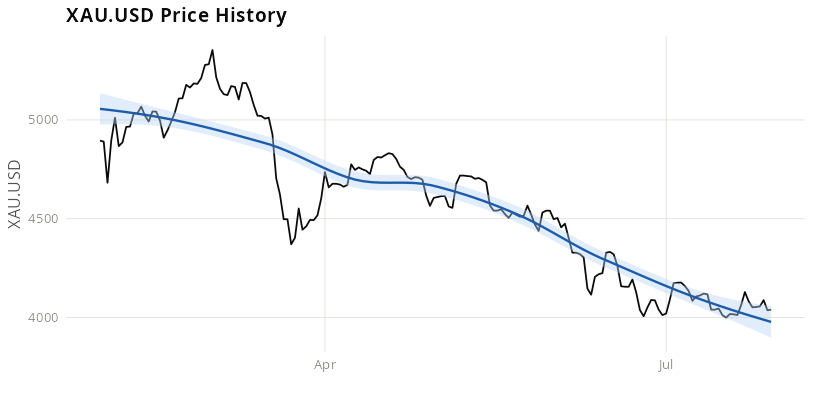
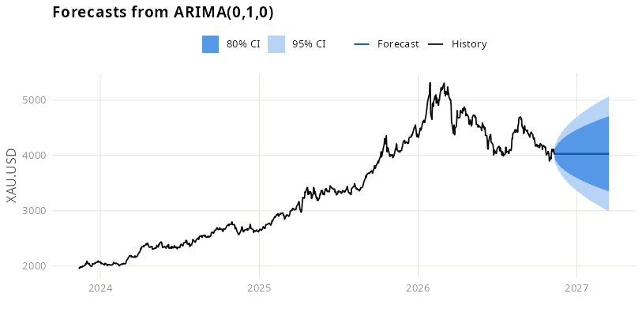

Precious Metals Price ARIMA Forecast
An R Shiny app that forecasts gold, silver, palladium, and platinum prices with auto.arima.


What it does
The app downloads the last 180 days of precious metals prices from
Oanda and forecasts the next 90 days
using the auto.arima function from the
forecast R package.
It was originally built for the Coursera “Developing Data
Products” capstone in December 2016, and has since been modernized:
current package versions, an automated test suite, CI, and linting.
Metals and currencies
| Metal | Ticker |
|---|---|
| Gold | XAU |
| Silver | XAG |
| Palladium | XPD |
| Platinum | XPT |
Prices can be viewed in US Dollars, Euros, or Pounds Sterling.
App tabs
- Prices Plot — price history for the selected metal/currency, with a linear or loess smoother.
- Prices Table — the underlying price data.
- Forecast Plot — the 90-day ARIMA forecast, with 80%/90% confidence bands.
- Forecast Table — the forecasted values.
- Arima model — the fitted model chosen by
auto.arima. - Differences Plot — first differences (optionally log10) of the price series.
- Residuals Plot — ACF/PACF of the model residuals.


Source & citation
Source code, tests, and the CI workflow live on GitHub. See CITATION.cff for how to cite this software.